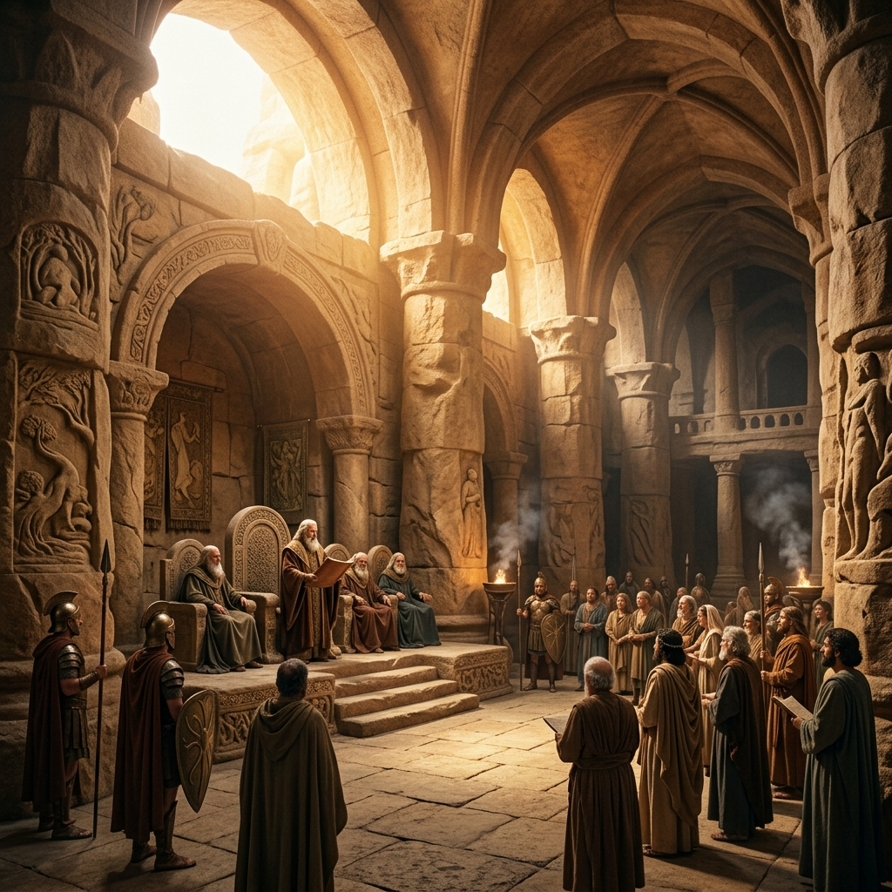

Masterclass · Theology of Suffering
POSSESSION VS
ENFORCEMENT
You can own something you are not living in
Why does so much disorder exist in the lives of genuinely positioned believers? The distinction lies in knowing that illegally occupied territory does not clear itself simply because the deed changed hands.
🔑 The One-Line Thesis
A rightful owner who does not know their rights, or does not enforce them, will watch illegal occupants live in a territory that legally belongs to them.
📜 The Core Scriptures
"Having disarmed principalities and powers, He made a public spectacle of them, triumphing over them in it."
— COLOSSIANS 2:15
"Therefore, just as through one man sin entered the world, and death through sin, and thus death spread to all men."
— ROMANS 5:12
TAP: WHY SUFFERING CONTINUES
Many believers are living outside houses that belong to them. Praying for God to give them what He has already given. Asking Him to do what He has already authorised them to do. The territory is occupied. Eviction requires a legal stand. It requires applying the authority you carry with the knowledge and the power to enforce it.
🗺 The Architecture of Disorder & Restoration
Tap any node to understand the mechanics of reality.
THE 7 CONSEQUENCES (THE DOWNSTREAM EFFECTS)
WHERE ACTIVE SUFFERING ORIGINATES TODAY
🧩 Experiential Deep-Dives & Labs
I. TRACKING THE 7 CONSEQUENCES
Every form of suffering you encounter can be traced back to one of these original fractures. Select one to see its redemptive countermeasure.
II. THE 3 ORIGINS OF SUFFERING
Not everything that goes wrong is a demonic attack. Conflating the origins of suffering—applying the wrong response to the wrong origin—is one of the primary reasons believers pray without resolution.
Wisdom distinguishes between a broken world, a targeted attack, and divine formation — and responds with either endurance, eviction, or surrender.
III. THE BREAKING OF THE VESSEL
John 12:24 — "Unless a grain of wheat falls into the ground and dies, it remains alone."
There is a form of suffering that is not enemy warfare. It is the intentional breaking of the outer man by God Himself to prepare a vessel for greater weight. Many believers are actively rebuking what God is using. They want authority without the formation that makes authority safe to carry.
The vessel must be broken of its own confidence before it can carry a treasure it did not produce.
IV. THE WORK OF LEGAL ENFORCEMENT
Evicting poverty, sickness, or generational patterns is not about the volume of your prayer. It is a legal stand. It is the quiet, grounded, informed refusal to accept any condition that contradicts the finished work of Christ.
It begins with informed, specific, legally grounded prayer that names the operation and enforces the transfer of legal jurisdiction through the blood of Christ.

⚠️ The Illusion of Abdication
God is sovereign. But within that sovereignty, He delegated systems of governance to humanity (Psalm 115:16). There is a vast difference between what God permits within His sovereignty and what God desires within His will. Calling every negative outcome "God's plan" without engaging your authority is not humility. It is abdication.
🪞 Reflection — The Legal Audit
Is there a pattern in your family line that has repeated long enough that you can no longer call it coincidence? Have you ever brought it before God in specific, legal, covenant prayer?
Is there an area of your life where you have been accepting disorder as though it were God's will — when it may actually be an illegal occupation you haven't confronted?
Have you been waiting for God to remove your suffering, when God is waiting for you to enforce what He has already given you authority over?
🔥 The Closing Declaration
THE MANDATE ACCEPTED
"I will no longer live outside territory that belongs to me. I reject passive resignation. Where God is breaking me for formation, I surrender. Where the enemy occupies illegally, I enforce the eviction through the finished work of Christ."